library(dplyr)
df_1 <- data.frame(col1 = c(6, 13),
col2 = c(116, 111)
)
colnames(df_1) <- c("Y=0", "Y=1")
rownames(df_1) <- c("EA","CVS")
df_1_extended <- rbind(df_1, "Total" = colSums(df_1))
df_1_extended <- df_1_extended |> mutate("Total" = rowSums(df_1_extended))
df_1_extended
## Y=0 Y=1 Total
## EA 6 116 122
## CVS 13 111 124
## Total 19 227 2462. Comparación de test y tratamiento del tamaño muestral (II) ✓
Tratamiento muestral de la comparativa
En la comparativa de dos pruebas diagnósticas, es importante la forma en que se han elegido los individuos y cómo se ha construido el estudio comparativo.
Diseño pareado. Cada sujeto se somete a todas las pruebas que se quieren comparar. - Son válidos cuando las pruebas diagnósticas no interfieren entre ellas - Se debe diseñar el experimento de forma que las pruebas se realicen en distinto orden para cada sujeto.
Diseño no pareado. Un sujeto solo se somete a una prueba. Cada test se aplica a un conjunto de sujetos diferente. - Implican un protocolo detallado del estudio. - Se aplican en pruebas diagnósticas invasivas, que causan malestar en el paciente, que consumen tiempo o que conllevan un riesgo significativo. - En pruebas que interfieren en los resultados de la otra. - En estudios observacionales.
Es preferible el diseño pareado ya que genera menos variabildiad inter sujetos.
Notación.
\[ \begin{aligned} \textbf{No pareado} \end{aligned} \]
\[ \scriptsize \begin{aligned} \textbf{D=0} \end{aligned} \begin{array}{c|c|c|c|} & Y = 0 & Y = 1 \\ \hline \text{Test A} & n_{D}^{-}(A) & n_{D}^{+}(A) & n_{D}(A)\\ \text{Test B} & n_{D}^{-}(B) & n_{D}^{+}(B) & n_{D}(B)\\ \hline \end{array} \]
\[ \scriptsize \begin{aligned} \textbf{D=1} \end{aligned} \begin{array}{c|c|c|c|} & Y = 0 & Y = 1 \\ \hline \text{Test A} & n_{\overline{D}}^{-}(A) & n_{\overline{D}}^{+}(A) & n_{\overline{D}}(A)\\ \text{Test B} & n_{\overline{D}}^{-}(B) & n_{\overline{D}}^{+}(B) & n_{\overline{D}}(B)\\ \hline \end{array} \]
\[ \begin{aligned} \textbf{Pareado} \end{aligned} \]
\[ \scriptsize \begin{aligned} \textbf{D=1} \end{aligned} \begin{array}{c|c|c|c|} & \text{(Test A) Y = 0} & \text{(Test A) Y = 1} \\ \hline \text{(Test B) Y = 0} & a & b & n_{D}^-(B)\\ \text{(Test B) Y = 1} & c & d & n_{D}^+(B)\\ \hline & n_{D}^-(A) & n_{D}^+(A) & n_{D} \end{array} \]
\[ \scriptsize \begin{aligned} \textbf{D=0} \end{aligned} \begin{array}{c|c|c|c|} & \text{(Test A) Y = 0} & \text{(Test A) Y = 1} \\ \hline \text{(Test B) Y = 0} & e & f & n_{\overline{D}}^-(B)\\ \text{(Test B) Y = 1} & g & h & n_{\overline{D}}^+(B)\\ \hline & n_{\overline{D}}^-(A) & n_{\overline{D}}^+(A) & n{\overline{D}} \end{array} \]
Estimación de medidas de comparación en datos no paradeados
Se observa la situacion real de cada conjunto de personas (grupo con la caracteristica y grupo sin la caracteristica; grupo con un test y grupo con otro test, etc.). Se contabiliza y realizan estimaciones de manera independiente.
En estudios de cohortes
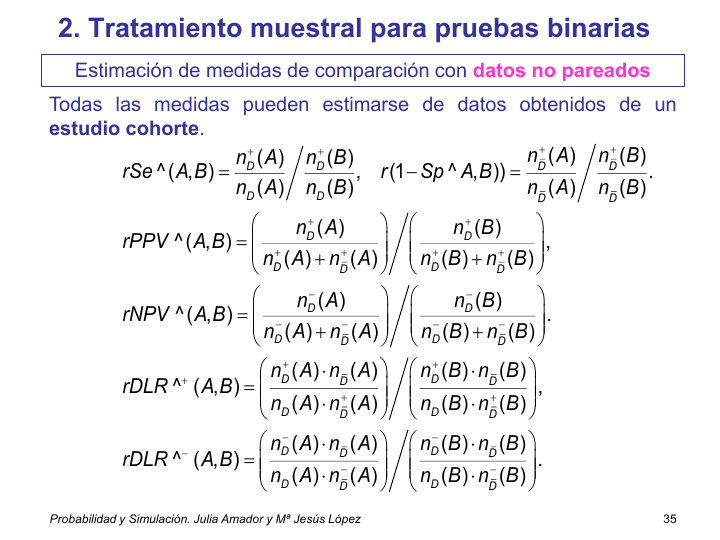
En estudios de caso-control
No se puede estimar las medidas comparativas para los valores predictivos puesto que involucran a la prevalencia.
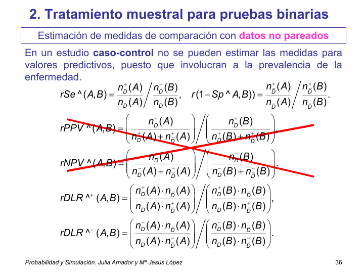
Resultados para muestras grandes
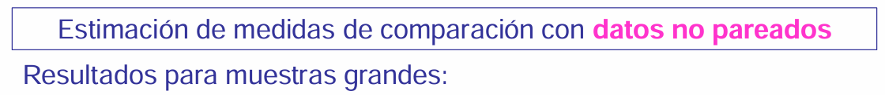
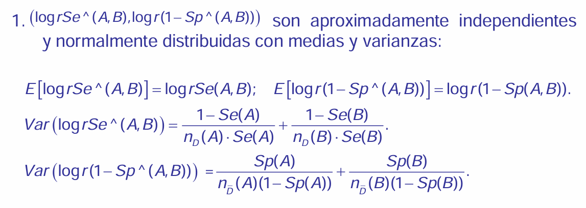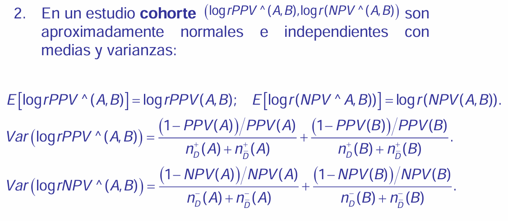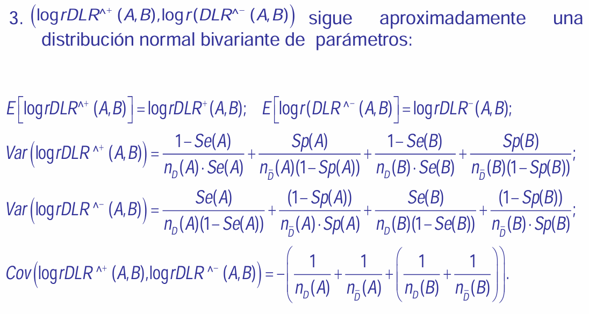
Ejemplo 2.4.
Los siguientes datos corresponden a dos pruebas diagnósticas aplicadas a mujeres embarazadas en el primer trimestre de embarazo para diagnosticar anormalidades cromosómicas fetales. Estas pruebas son CVS (Chorionic villus sampling) y EA (Early amniocentesis). Las mujeres fueron aleatorizadas para recibir CVS o EA. Los datos obtenidos se resumen como:
library(dplyr)
df_0 <- data.frame(col1 = c(4844, 4765),
col2 = c(34, 111)
)
colnames(df_0) <- c("Y=0", "Y=1")
rownames(df_0) <- c("EA","CVS")
df_0_extended <- rbind(df_0, "Total" = colSums(df_0))
df_0_extended <- df_0_extended |> mutate("Total" = rowSums(df_0_extended))
df_0_extended
## Y=0 Y=1 Total
## EA 4844 34 4878
## CVS 4765 111 4876
## Total 9609 145 9754prueba EA: 122 + 4.878 = 5.000 prueba CVS: 124 + 4.876 = 5.000
gente con problemas: 122 + 124 = 246 gente sin problemas: las otras = 5.000 + 5.000 - 246 = 9.754
Algo ha pasado que ha dicho nuestro gozo en un pozo
Se_EA = 116 / 122
Se_CVS = 111 / 124
# rSe_est_EA_sobre_CVS
(rSE_est = Se_EA / Se_CVS)
## [1] 1.062177Uno_menos_Sp_EA = 1 - 4844 / 4878
Uno_menos_Sp_CVS = 1 - 4765 / 4876
# rSe_est_EA_sobre_CVS
(rUno_menos_Sp_est = Uno_menos_Sp_EA / Uno_menos_Sp_CVS)
## [1] 0.3061807(IC_rSe_est_EA_CVS = exp(IC_log_rSe_est_EA_CVS))
## [1] 0.9878485 1.1420981(IC_rUno_menos_Sp_est_EA_CVS = exp(IC_log_rUno_menos_Sp_est_EA_CVS))
## [1] 0.2089513 0.4486530(RC_log_rSe_est_log_rUno_menos_Sp_est_EA_CVS = c(IC_log_rSe_est_EA_CVS, IC_log_rUno_menos_Sp_est_EA_CVS))
## [1] -0.01222597 0.13286699 -1.56565410 -0.80150543En el 95 % de los casos con una muestra de igual tamaño y mismo comportamiento encontraríamos razón de sensibilidades de 0.98 a 1.14 por lo que no se puede asumir que ninguna prueba sea mejor que otra ya que el 1 está contenido en el intervalo de confianza.
Con estas razones no podríamos decir que una prueba sea mejor que otra, no se cumple la condición i y consecuentemente la ii tampoco. Hay que mirar la iii.
Al hacer un IC para ambas medidas conjuntamente debo subir levemente la confianza y construir una region como producto de los intervalos. Esta región de confianza no nos conviene ya que es aún más ancha debido a que hemos subido esa confianza.
Respecto a la sensibilidad no tengo diferencias de comprtamiento entre ambas pruebas al 95 %. En una confianza del 90 % el intervalo será más pequeño y nos estaremos arriesgando más. (Calcularlo el 90 % a ver si sirve o no, tal vez podamos dar una respuesta clara con una confianza más pequeña)
95 % en esa región vs 95 % en una prueba y 95 % en otra prueba.
Estimación de medidas de comparación en datos paradeados
Resultados para muestras grandes
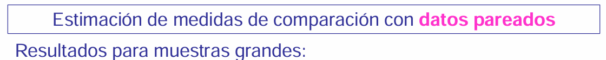
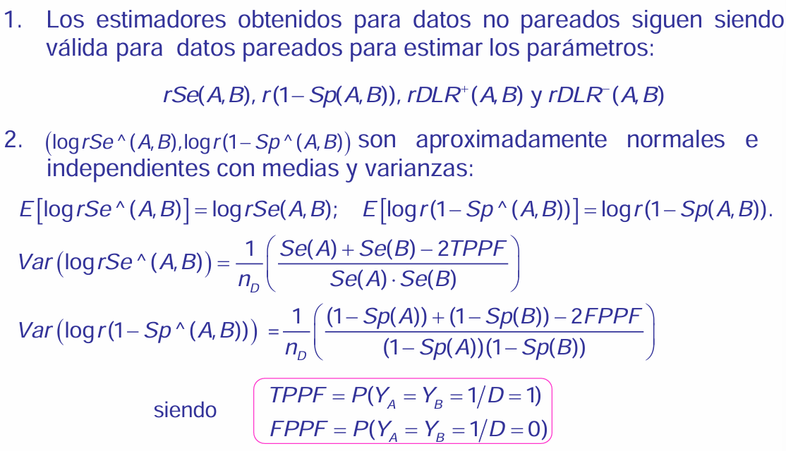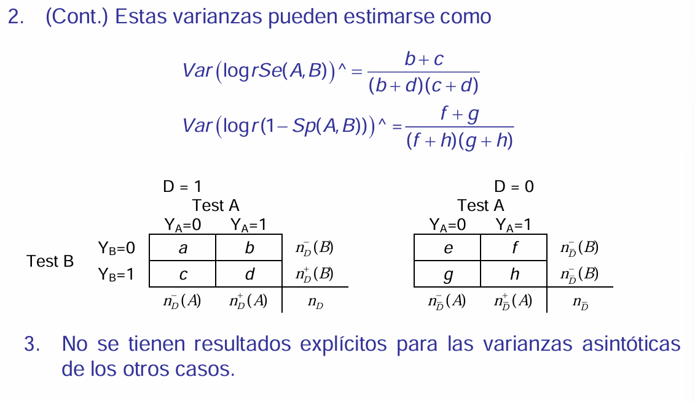
Eficiencia de diseños pareados frente no pareados
Queremos comparar la precisión de la estimación de rSe(A,B) en estudios pareados y no pareados.
Supondremos que en el diseño no pareado se tiene \(n_D(A) = n_D(B)\).
Y también coincide la cantidad de individuos sanos que realizan ambas pruebas.
En el diseño no pareado participa el doble de sujetos que en el diseño pareado
Para comparar la precisión de la estimación comparamos la varianza de la estimación de \(rSe(A,B)\) en cada diseño.
Para diseños no pareados con muestras grandes y \(n_D(A) = n_D(B)\):
\[ Var\left(\log \widehat{rSe}(A,B)\right) = \frac{1}{n_D} \left( \frac{\text{Se}(A) + \text{Se}(B) - 2\text{Se}(A)\text{Se}(B)}{\text{Se}(A) \cdot \text{Se}(B)} \right) \]
Que se relaciona con la varianza de un diseño pareado del modo siguiente:
\[ \text{Var}_{\text{no pareado}}\left( \log \widehat{rSe}(A,B) \right) - \text{Var}_{\text{pareado}}\left( \log \widehat{rSe}(A,B) \right) = \frac{2}{n_D} \left( \frac{\text{TPPF}}{\text{Se}(A) \cdot \text{Se}(B)} - 1 \right) \]
Si las pruebas son condicionalmente independientes, entonces los diseños pareados y no pareados son igualmente eficientes.
Medidas de asociación entre las pruebas.
\[ A_D(A,B) = \frac{P(Y_A = 1, Y_B = 1 / D = 1)}{P(Y_A = 1 / D = 1)P(Y_B = 1 / D = 1)} = \frac{\text{TPPF}}{\text{Se}(A) \cdot \text{Se}(B)} \]
Suponemos en que el mismo número de individuos en A que en B, por lo que el diseño tiene el doble tamaño que en el pareado.
Para comparar la precisión de las estiamciones, la única medida que tengo es el cociente entre las probabilidades de clasificacion.
Obtamos por comparar la varianza del cociente (\(rSe\)) en el diseño no pareado con la varianza en el diseño pareado.
No comparo las pruebas. Sino que tengo dos pruebas para comparar y podemos compararlas en un diseño pareado o en un diseño no pareado. Prefiriendo elegir un diseño que introduzca la menor variabilidad posible para poder comparar las pruebasdiagnósticas mejor.
Interpretación.
\(Α_D(A,B)\). Riesgo relativo de tener un resultado positivo con un test cuando ya se ha observado un resultado positivo con el otro test.
\(Α_D(A,B) > 1\). Asociación positiva. Los diseños pareados son más eficientes que los no pareados para estimar \(rSe(A,B)\).
Muestras pequeñas -> Simulación.
De manera análoga se puede comparar la eficiencia de los diseños comparando la varianza del estimador de \(r(1-Sp(A,B)\) en ambos estudios.
La medida de asociación entre las pruebas es:
\[ A_\overline{D}(A,B) = \frac{P(Y_A = 1, Y_B = 1 / D = 0)}{P(Y_A = 1 / D = 0)P(Y_B = 1 / D = 0)} = \frac{\text{TPPF}}{\text{Se}(A) \cdot \text{Se}(B)} \]
Los diseños pareados son más eficientes para estimar \(r(1-Sp(A,B))\) cuando \(A_\overline{D} > 1\).
Si son condicionalmente independientes me da igual un modelo pareado que un modelo no parado para compararlas (si se puede aplicar las dos pruebas diagnósticas a un mismo individuo, claro).
Aunque\(n\) no sea grande, el método sigue siendo válido siempre que tengamos al menos cinco observaciones en los falsos negativos y cinco en los falsos positivos (que conste que ha dicho “cinco falsos positivos Y cinco falsos negativos”, que luego me acusa de ser literal y decirlo mal). En este caso, se puede aplicar una metodología asintótica basada en resultados recientes.
Ejemplo 2.2.
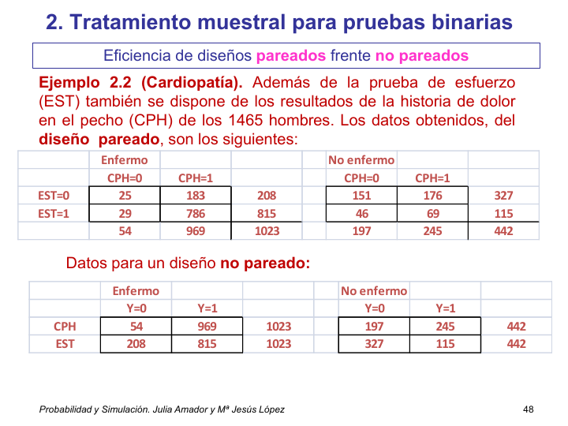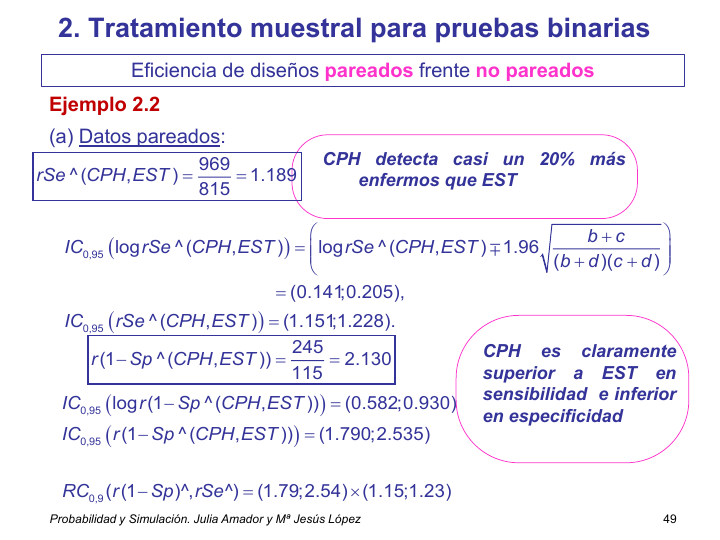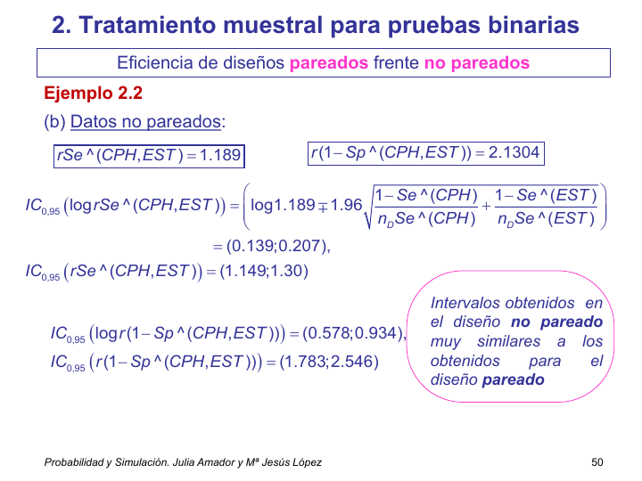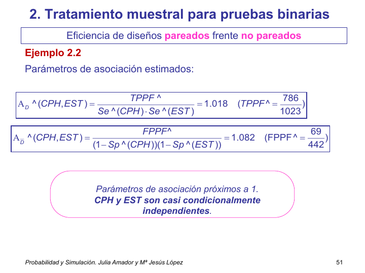
Estimación de la sensibilidad en cada prueba.
Para EST.
En el modelo pareado. Tengo 1.023 enfermos. (voy a enfermos y ver que tienen resultados positivos en una y en otra). De 1023 enfermos hay 815 positivos.
En el modelo no pareado. Tengo 1023 enfermos y 815 positivos.
DISEÑO PAREADO.
\(\widehat{rSe}(CPH,EST) = \frac{\frac{969}{1023}}{\frac{815}{1023}} = \frac{969}{815} = 1.1889\). CPH detecta casi un 20 % más enfermos que EST
\(IC_{95}(\widehat{rSe}) = (1.151, 1.228)\)
\(IC_{95}(\widehat{r(1-Sp)}) = (1.790, 2.535)\)
DISEÑO NO PAREADO.
\(\widehat{rSe}(CPH,EST) = \frac{\frac{969}{1023}}{\frac{815}{1023}} = \frac{969}{815} = 1.1889\). CPH detecta casi un 20 % más enfermos que EST. (el ejercicio está hecho para que den los mismos números)
\(IC_{95}(\widehat{rSe}) = (1.149, 1.229)\)
\(IC_{95}(\widehat{r(1-Sp)}) = (1.783, 2.546)\)
Intervalos obtenidos en el diseño no pareado muy similares a los obtenidos para el diseño pareado
\(\hat{A}_\overline{D}(CPH,EST) = 1.018\). Es pracitcamente 1. Usar una misma muestra para realizar las dos pruebas o dos muestras independientes que realice cada una una de las pruebas es, a fectos de estimacion y de variabildiad, lo misma. No hay ventaja en buscar un único grupo que realice ambas pruebas.
\(\hat{A}_\overline{D}(CPH,EST) = 1.018\) = frecuencia de individuos sanos con dos pruebas positivas vs individuos sanos con priemra positiva * individuos sanos con segunda positiva. Si el valor estimado hubiera sido 3.25, se diría que la prueba CPH detecta 3.25 veces más enfermos que la prueba de EST.
\(r(Se(EST, CPH)) = 815/969 = 0.84\). La prueba EST detecta un 20 % más de qué, de enfermos.